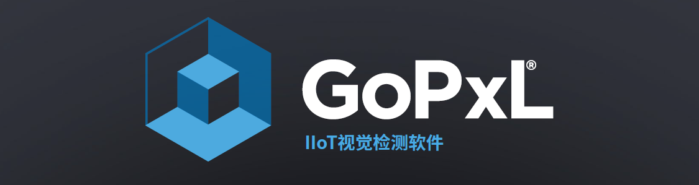

LMI Technologies GoPxL® 软件特点介绍

{kind=link}
1. 核心软件特点
🌐 现代化的基于 Web 的用户界面
无需安装任何客户端软件。只需在浏览器输入 IP，即可实现全功能操控。
{kind=link}
{kind=link}

{kind=link}

📐 多维度 (2D/3D) 测量与 AI 检测
- 全数据处理：直接处理 3D 轮廓 (Profile)、点云 (Surface)、Mesh 数据及 2D 强度图。
- 集成 AI 工具：内置异常检测 (Anomaly Detector)、分类、OCR 及条码读取，支持设备端推理。
- 多层材料扫描：配合 Gocator 5500 系列，支持多达 8 个堆叠轮廓的测量，适用于夹层玻璃、显示屏等厚度检测。
🚀 分布式数据处理与硬件加速
性能优化
GoPxL 支持将数据流卸载至 Windows PC 或 GoMax® NX 智能视觉加速器，利用计算机或 GPU 算力显著提升数据密集型应用的处理帧率。
🏭 丰富的工业通讯协议
GoPxL 内置了主流工业协议，确保与 PLC 和机器人系统的无缝对接： * 标准协议：EtherNet/IP, Modbus TCP, PROFINET, Ethernet ASCII。 * 开发接口：提供 GDP 协议、GoPxL SDK 和 REST API，便于开发自定义客户端。
2. 进阶功能展示
-
数组与批量处理 --- 通过
Array Create实现特征捆绑。开启 Batching 模式可用单一工具独立测量所有重复特征（如引脚）。 -
多传感器校准 --- 提供图形化向导，支持将并排、多角度或 360° 布局的多台传感器数据拼接为单一宽轮廓或 Mesh。
-
定制化 HMI --- 内置 GoHMI Designer，包含 40 多个拖放式组件，轻松搭建专属的 OK/NG 状态及测量值显示界面。
-
仿真与回放 --- 提供 Emulator 进行离线模拟，以及 Replay Editor 支持
.gprec,.sur等格式的数据导入导出。
3. 行业应用与市场
🏭 核心目标行业
| 行业 | 典型应用场景 |
|---|---|
| 汽车与新能源 | 引擎缸体检测、焊缝引导、动力电池在线检测、孔位标定。 |
| 3C 电子/半导体 | PCB 板检测、连接器引脚测量、手机显示屏多层材料缺陷检测。 |
| 医疗与食品包装 | 医疗包装完整性检测、包装盒空隙测量、食品质量与色彩验证。 |
| 通用制造 | 木板质量检测、线缆表面污损检测、紧固件三维尺寸测量。 |
🎯 核心检测任务流
graph LR
A[高精度测量] --> B[AI 缺陷检测]
B --> C[特征定位]
C --> D[高速 OCR/读码]
graph LR
A[高精度测量] --> B[AI 缺陷检测]
B --> C[特征定位]
C --> D[高速 OCR/读码]👥 适用用户群体
GoPxL 凭借其高扩展性和直观的用户体验，主要面向以下三类核心群体：
终端用户与制造商
适用于需要可靠、灵活且易于维护的视觉系统，并希望系统能够随着生产需求变化而灵活扩展的企业。
系统集成商 (Integrators)
适用于追求快速部署、跨工位便捷扩展的团队。利用内置硬件加速特性，部分场景下甚至无需额外配置工控机（PC）即可完成部署。
Gocator® 传感器现有用户
适用于需要在同一 3D 生态系统内增加 2D 检测功能，或希望升级原有 Gocator 固件以获取更强大 AI 及数组工具的用户。
🏭 核心目标行业
GoPxL 的高精度、高速处理以及强大的多维（2D/3D）工具库，使其能够广泛应对以下行业的工业检测难题：
| 行业分类 | 核心应用点 |
|---|---|
| 汽车制造与新能源 | 引擎缸体/气缸盖检测、焊缝引导、胶路检测、动力电池在线检测。 |
| 3C 电子与半导体 | PCB 板检测、连接器引脚 (Pins) 计数与测量、手机多层材料厚度及缺陷检测。 |
| 医疗与食品包装 | 医疗包装完整性检测、包装盒空隙测量、食品（如巧克力、软糖）质量与色彩验证。 |
| 通用制造 | 木板质量检测、紧固件三维尺寸测量、线缆/编织线表面污损检测。 |
🎯 典型检测应用场景
从原型开发到量产，GoPxL 在生产现场可即时优化并执行以下核心任务：
1. 高精度尺寸与形位测量
以物理单位精确测量 间隙、面差（偏移量）、直径、角度、高度及体积，确保产品符合严苛的公差要求。
2. AI 缺陷检测与分类
结合 异常检测 (Anomaly Detector) 和分类工具，实时识别复杂表面或反光材料上的划痕、污染、凹陷、错印及特征缺失，有效降低过杀和漏杀率。
3. 特征定位与动态追踪
即使在密集的电路板或复杂的组件上，也能高精度定位引脚、端口或零件特征，并支持 机器人视觉引导。
4. 高速 OCR 与读码追溯
针对高速运动目标，提供高达 84 FPS 的成像能力，在不降低生产速度的前提下，实时读取序列号、DMC 码及条码标签。
下一步建议
如果您已经了解了 GoPxL 的基本概况，建议前往 快速上手 章节开始您的第一个视觉任务配置。